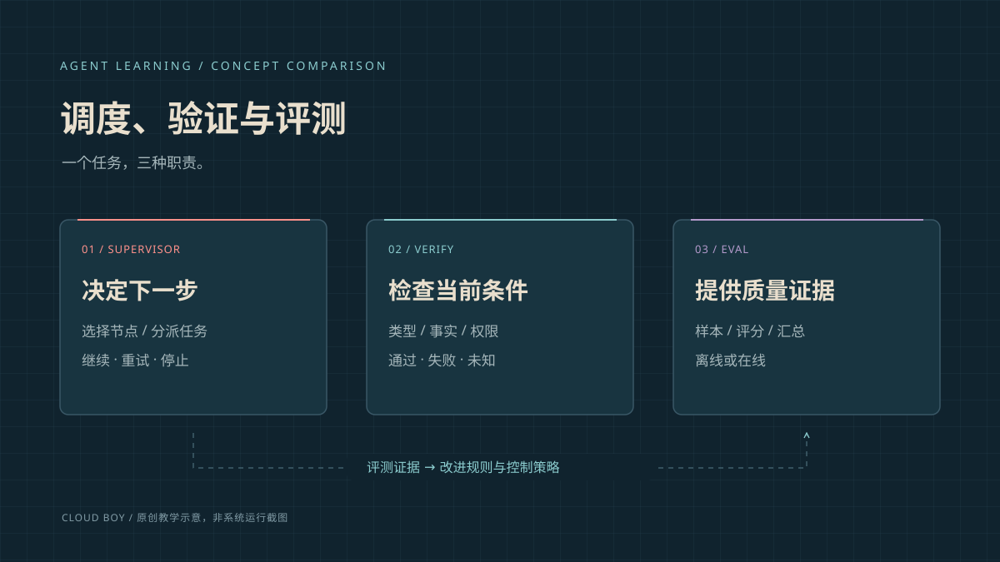

Supervisor、Verify 与 Eval：职责、机制与对比
Supervisor 决定下一步做什么，Verify 检查眼前的结果是否符合要求，Eval 记录并比较任务做得怎样。这篇说明三者怎样配合，以及漏检和误拦怎样计算。

谁安排下一步，谁负责检查
Supervisor 可以理解为安排任务的主管：决定接着查资料、修改、等待，还是结束。Verify 是当前这一步的检查：答案或动作是否满足要求，哪里没过，哪里还无法确认。Eval 是评测：用事先定好的条件，检查任务质量、花费和是否稳定。
它们都可能由程序规则或模型来做。区别要看检查结果用在哪里：是马上影响这次任务下一步，还是保存下来，供之后比较不同版本。一个评分如果被用来决定当前动作能否继续，也就在做放行检查。
同一份草稿怎样经过三种处理
草稿问的是 2.4 版，却引用了 2.3 版文档 D23。补查 2.4 版文档 D24 后，还要核对里面的参数，再把 8000 毫秒换成 8 秒。只把引用编号换掉，不能证明内容已经改对。
修改后的第二版草稿还要再检查一遍。草稿准备好，也不代表已经提交。评测可以记录这次修订的结果，也可以把一批任务放在一起，看改动有没有减少错误、增加多少花费。